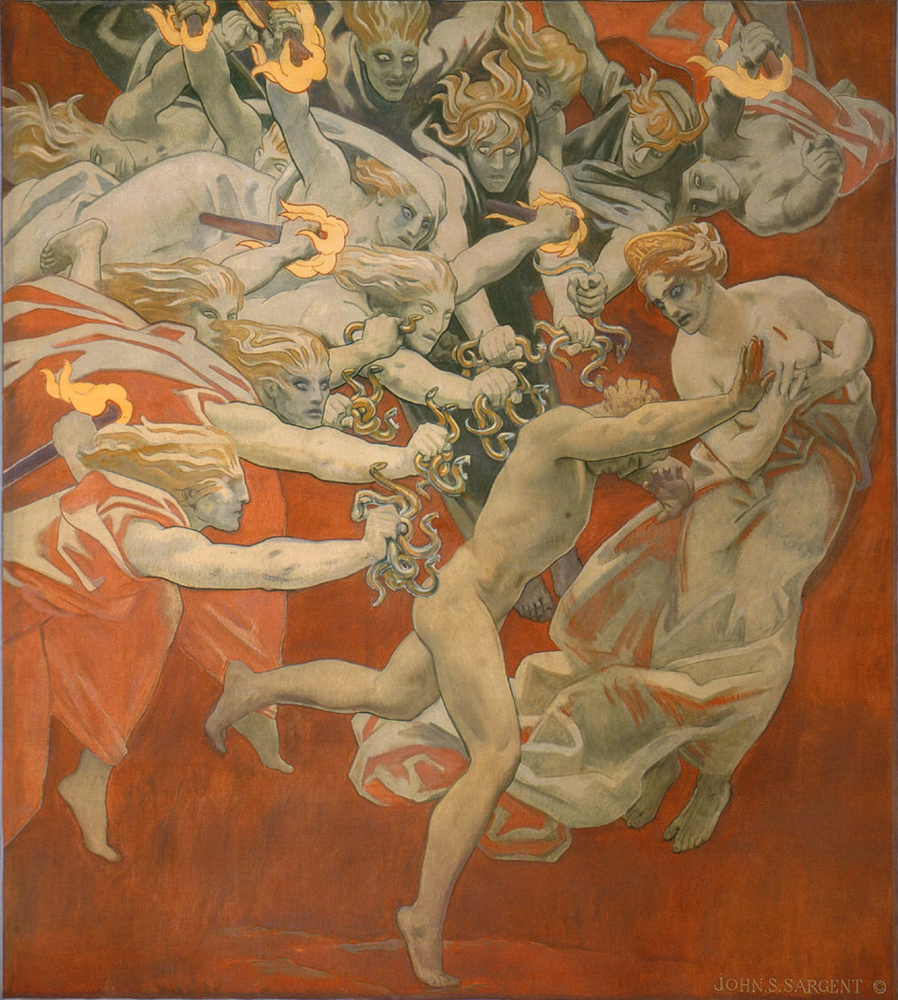

Is social media affecting humanitarian crises and conflict in ways that kill people and may ultimately undermine humanitarian response?
For the first time in history, war and the attendant human suffering are occurring in societies connected to mobile internet–and subsequently entering the public consciousness in new ways. Aspects of war and conflict that were once near-invisible to those outside the war zone are now visible world-wide on social media platforms. People far away from the battlefield can now interact with and impact conflict in unprecedented and unexpected ways. The Internet has altered our public consciousness of war, in ways that we do not adequately understand.

Historically, information technology has been seen as benefiting human rights movements, civil society, and promoting democracy. But this optimistic view of technology masks a dark side, one which is not purely the domain of domestic politics. These platforms, and the misinformation and disinformation that are spread upon them, appear to play an increasing role in conflict and humanitarian crises.
What are misinformation and disinformation?
The term “fake news” implies pure falsehoods, and subsequently fails to capture the breadth of what misinformation and disinformation are. Often, “fake news” is disinformation, what scholars at the Berkman Klein Center at Harvard Law School define as “the purposeful construction of true or partly true bits of information into a message that is, at its core, misleading.” This is distinct from misinformation, which is generally false information that is not deliberately or maliciously spread, though it may have harmful effects. This post will discuss both disinformation and misinformation, and argues that both phenomenon—along with outright lies—should concern humanitarians.
Ebola
During the Ebola crisis in West Africa, several returning US healthcare workers contracted the disease, prompting a public scare about the potential for an outbreak here. A paper by the MIT Civic Media Centre in 2017 established that the fourth- most cited media source regarding the Ebola crisis and the subsequent US controversy was Twitter, and that the discourse on this platform was largely focused on the exceedingly small risk of a US outbreak rather than on the very real Ebola crisis in West Africa.
The authors of the MIT paper concluded that while scientific sources rarely discussed quarantines and travel bans, the Twitter discourse prioritized these extreme measures. They suggest that political media and policy-makers may have been influenced more by the less-informed Twitter discourse than they were by the less-sensational but more scientifically accurate scientific discussion, and that international policy responses subsequently reflected these more extreme sentiments, ultimately diverting effective aid and leading states to violate international law.
Myanmar
Between 2011 and 2016, the number of people connected to the internet in Myanmar grew from around 10000 people to over 35 million—70 percent of the population. Much of this access was driven by Facebook’s partnership with Myanmar’s state telecom provider. As of 2017, 30 million people in Myanmar were connected to the Internet through Facebook’s Free Basics.
This immense rise in connectivity seems to have come at a cost: the New York Times reports that hate speech and rumors against Myanmar’s Rohingya minority group have gone viral. Hate speech and disinformation against the Rohingya has been spread by political figures, religious extremists, and everyday people. The U.N.’s Independent Fact-Finding Mission on Myanmar recently asserted that social media played a critical role in the spread of hate speech, and that the role of Facebook in public and political life in Myanmar has made it into an effective channel for disinformation.
Syria
Myanmar is far from the only recent humanitarian crisis where social media has played a role. The Carter Center’s documentation of the conflict in Syria is based in part on social media data. Human rights group Bellingcat uses online information and social media postings to gather evidence of atrocities. These online sources are valuable in non-permissive environments like Syria, where researchers cannot safely travel to gather first-hand information themselves. But there is a dark side to these social media accounts of the Syrian conflict. Multiple traditional media accounts report the existence of a sustained, online disinformation campaign that is being waged against the Syrian Civil Defence volunteer first response organization, also known as the White Helmets. The Guardian pointed out in a December 2017 report that Syrian and Russian state media are participating in this campaign. This campaign appears to have two goals: eroding public sympathy for the White Helmets, and discrediting them as a key source of evidence of war crimes committed by belligerents in Syria. This may, in turn, play a role in undermining humanitarian access to opposition held areas in Syria, and allow warring parties to commit atrocities with impunity.
Access Denial
Since the beginning of the Syrian conflict, humanitarian actors have alleged that the government has attempted to limit humanitarian access to opposition held areas with bureaucratic red tape and lack of protection. A 2018 report by the UN Independent Commission on the Syrian Arab Republic goes further, reporting that “humanitarian aid has been instrumentalized as a weapon of war.” The UN has failed to implement proposed reforms in response to this situation, due to political pressure from Damascus.
As a result of this politicization of aid, international relief operations have responded by forging unofficial partnerships with local NGOs, and by quietly working across opposition lines without the permission of the Syrian government. Many of these local NGOs, like the White Helmets, were formed out of pre-war networks of activists or healthcare workers. Many of them, like the White Helmets, have been deliberately targeted by the Syrian government and their allies.
More so than any other local response organization in Syria, the White Helmets have captured public imagination in the West, including an Oscar-winning film. Not all of this attention has been positive. The White Helmets are now subject to sustained misinformation and disinformation campaign which portrays them as terrorists who can legitimately be targeted as combatants. Although it is tempting to dismiss these campaigns as the inconsequential work of conspiracy theorists and state media, their influence is spreading far beyond social media. Promoters of these anti-White Helmets theories have been cited at the UN, credible media outlets have published their claims, and even some well-meaning activist groups appear to be getting swept up in supporting them. That it is not clear where state manipulation of the discourse ends and genuine mistrust of Western intentions begins is itself a problem for the humanitarian community and human rights NGOs, which may find these debates playing out internally, as warring parties attempt to manipulate aid by invoking the Humanitarian Principles and promoting competing narratives, all while declaring civilians legitimate targets in defiance of ICRC guidance.
Getting away with (Mass) Murder
In late October, the United Nations and the Organization for the Prohibition of Chemical Weapons (OPCW) released a report pointing the finger at the Syrian government for using deadly sarin gas on civilians in the village of Khan Sheikhoun. The report relied upon scientifically valid evidence, including samples of blood from the victims and soil from the site — some collected by local and diaspora response groups. Despite this evidence, the Syrian government has denied complicity in the attack from the very beginning and has offered conspiratorial alternative explanations for the deaths. These alternative explanations for the attack have been picked up by anti-White Helmets activists and warring party state media alike—in attempts to undermine both the Helmets and the OPCW report by linking the latter to the former and declaring them terrorist sympathizers or western propaganda.
Harvard scholar Kate Cronin-Furman suggests that the Syrian government’s atrocity denial may be modeled on a strategy established by Sri Lanka in its war against Tamil rebels. She writes that the Syrian government, as the Sri Lankan government did, aggressively disputes evidence and reports emerging from the conflict as propaganda, and shifts blame to rebel forces for the crimes it cannot feasibly deny. Work by Oxford’s Computational Propaganda Research Project points to social media strategies which manufacture the illusion of consensus and “democratize propaganda”—making it easy for anyone with an account to amplify false information, even if they do not actually intend to do so. Thanks to social media, warring parties in Syria appear to have put the this strategy of denial and blame-shifting on steroids.
Why is this different from other forms of media?
Are rumors and propaganda spread via the Internet really that different from rumors and propaganda spread via the radio or print media? Are these platforms really any different than broadcast media? After all, Radio Télévision Libre des Mille Collines is often cited as a contributor to the 1994 Rwandan Genocide. The research around whether 2G mobile phone access increases the likelihood of conflict is also inconclusive—some studies suggest it does, while others draw the opposite conclusion. But information and disinformation spread differently through Social media than more traditional platforms—potentially making the latter more dangerous.
Social media platforms and the Internet give disinformation a power it didn’t have though traditional media. The basic network structure of these social media sites allows information to spread much more rapidly and widely than traditional media by increasing the density and immediacy of what is known in network sociology as “weak ties.” These ties are the acquaintances in a social group—not the person that you’d invite out to a night with friends, but who you would only call for a specific reason—such as finding a job. These ties build bridges social groups, and are the most common source of new information in a given group. Increasing these weak ties, along with the peer-to-peer content sharing model of social media, and our preference to trust information based on who shared it, spreads information and disinformation in ways which are very different than broadcast medium such as radio and television
Polling in Myanmar from 2017 reveals that 73% of Facebook users in Myanmar use it for reading the news, and 60% report seeing posts about ethnic or religious conflict within the last week. These monetized platforms now mediate much of our social and public lives, and they are driven by algorithms designed to maintain our attention. The emergence of these algorithms as mediators of content within these networks may have additional effects—effects that shape not only how we interact with information but also how determine what is worth sharing. University of North Carolina sociologist Zeynep Tufeki notes that Youtube has determined that the best way to keep people engaged is to promote increasingly extreme content into their feeds, using its proprietary algorithms. Facebook’s algorithmic recommendation engine — along with its Groups feature—are also thought to play an important role in exposing people to extreme content, potentially radicalizing them.
If the recent Cambridge Analytica scandal has shown us anything, it’s that tools designed for capturing and selling our attention can be used to political ends and create political incentives in their own right. While conclusive evidence is not yet available, it stands to reason that the use and abuse of these platforms for political ends in societies with latent (or overt) ethnic or political tensions can inflame those tensions.
In Myanmar, this may increase the likelihood of tensions spilling over into ethnic violence and genocide. In Syria, they may be used to politicize aid and allow those guilty of alleged war crimes walk free. Even where intent doesn’t exist, the lessons of Ebola suggest that the role of these platforms in influencing public sentiment and policy makers choices regarding aid operations should not be underestimated. And these are far from the only examples: the humanitarian community needs to be asking itself what the use of anti-migrant disinformation in elections means for states’ willingness to uphold their obligations under the Refugee Convention, as well as other international conventions and treaties. Does this herald the end of multi-lateral humanitarianism?
While the problems of humanitarian access and aid cannot and should not be boiled down to a single issue, the daily drumbeat of news on how social media is shaping our societies and politics should not be ignored by the humanitarian community. After all, humanitarianism exists in a political world. If these platforms have the potential to undermine the very norms which construct our existence as a sector, the norms that protect both aid workers and civilians, and effect the decisions of policy makers towards aid, then the humanitarian community desperately needs a strategy address the new media world we live in today.